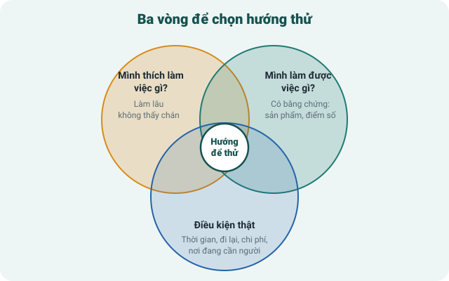

K7 · Tự học và phát triển nghề nghiệp › Bậc 2 Bắt đầu
Hiểu mình để chọn hướng thử bằng ba vòng
Khóa Chuẩn bị đi làm (N2) có 7 bài. Mỗi bài làm xong một tờ của Hồ sơ sẵn sàng đi làm. Bài này làm Tờ 1: Bản đồ hướng đi. Mẫu in ở trang Mẫu in N2.
1. Mục tiêu
- Viết Bản đồ ba vòng: điều mình thích làm, điều làm được có bằng chứng, điều kiện thật.
- Chọn 2 hướng thử và lên một phép thử nhỏ trong 14 ngày.
2. Khởi động truy xuất
Bài đầu khóa, nên câu hỏi dựa trên trải nghiệm của bạn. Trả lời không nhìn gì.
- Kể tên 3 việc bạn đã làm mà quên cả giờ giấc.
- Kể tên 3 nghề bạn biết rõ một ngày làm việc của họ.
Gợi ý
- Việc ở trường, ở nhà, câu lạc bộ, làm thêm đều được tính. Ví dụ: sửa xe đạp, vẽ poster, dạy em học.
- Nếu khó kể quá 1 nghề, đó là dấu hiệu bạn cần tìm hiểu thêm. Bài này giúp việc đó.
Học sinh nhỏ hơn có khóa riêng: Nghề nghiệp quanh em.
3. Giải thích
Nhiều bạn chờ "tìm ra đam mê" rồi mới chọn hướng. Cách đó dễ làm bạn đứng yên. Cách thực tế hơn là chọn vài hướng để thử, rồi để kết quả thử dẫn đường.
Bản đồ ba vòng. Viết ra giấy ba danh sách:

- Thích làm. Ghi hoạt động, không ghi tên nghề. "Sắp xếp đồ cho gọn" rõ hơn "thích làm kế toán".
- Làm được, có bằng chứng. Mỗi dòng kèm một bằng chứng: sản phẩm, điểm số, lời nhận xét của người khác.
- Điều kiện thật. Thời gian rảnh, khoảng cách đi lại, chi phí học, ngành đang tuyển ở nơi bạn sống.
Từ hoạt động sang hướng nghề. Nhìn chỗ giao của vòng 1 và vòng 2. Hỏi: "Nghề nào làm nhiều hoạt động này?" Liệt kê 3–5 hướng. Lọc lại bằng vòng 3. Giữ 2 hướng để thử.
Phép thử nhỏ. Thử là làm một việc ngắn, rẻ, để có thông tin thật:
Bốn kiểu phép thử nhỏ
Sau phép thử, ghi 2 dòng: điều bất ngờ, và bạn muốn thử tiếp hay đổi hướng. Đổi hướng không phải thất bại. Bạn vừa loại bớt một hướng bằng thông tin thật.
Các bài trắc nghiệm sở thích có thể gợi ý thêm hướng. Nhưng kết quả trắc nghiệm không quyết định thay bạn.
4. Ví dụ tại nơi làm việc Việt Nam
Tình huống giả định. Hà học lớp 11 ở Biên Hòa. Hà phân vân giữa "học kinh tế" và "học thiết kế".
Hà viết Bản đồ ba vòng:
| Vòng | Hà ghi |
|---|---|
| Thích làm | Làm poster cho lớp; chỉnh ảnh; sắp xếp kế hoạch đi chơi cho nhóm |
| Làm được (bằng chứng) | Poster Hội trại được trường dùng; điểm Toán 7,5; bạn bè hay nhờ lên lịch |
| Điều kiện thật | Rảnh tối thứ Bảy, Chủ nhật; đi xe đạp trong 5 km; nhà khó lo học phí cao |
Từ chỗ giao của vòng 1 và 2, Hà liệt kê: thiết kế đồ họa, marketing, tổ chức sự kiện. Vòng 3 lọc bớt một trường học phí cao. Hà giữ 2 hướng: thiết kế đồ họa và tổ chức sự kiện.
Phép thử: Hà hỏi chuyện chị họ làm thiết kế ở một xưởng in. Hà cũng xin làm tình nguyện một buổi hội chợ sách.
Kết quả: Hà bất ngờ vì nghề thiết kế phải sửa bài rất nhiều lần theo ý khách. Hà vẫn thích, và muốn thử tiếp bằng một khóa học miễn phí.
Vì sao cách này tốt: Hà dựa trên hoạt động và bằng chứng, không dựa vào tên ngành nghe hay. Hai phép thử cho Hà thông tin thật chỉ sau 2 tuần.
5. Thực hành
Tình huống giả định. Tuấn là sinh viên năm nhất ngành Kế toán. Tuấn thích sửa máy tính cho người quen và chơi bóng đá. Tuấn từng cài lại máy cho 6 người, ai cũng khen. Tuấn rảnh buổi tối, ở Thủ Đức, cần tự trang trải một phần chi phí.
Viết Bản đồ ba vòng cho Tuấn. Chọn 2 hướng thử và 1 phép thử nhỏ.
Gợi ý 1
Vòng 2 cần bằng chứng. "Cài lại máy cho 6 người, ai cũng khen" là bằng chứng tốt. "Chơi bóng đá" thuộc vòng 1 nhưng chưa có bằng chứng cho một việc làm.
Gợi ý 2
Vòng 3 có hai điều quan trọng: rảnh buổi tối và cần thu nhập. Phép thử có thể đồng thời là việc làm thêm.
Lời giải mẫu
- Thích làm: sửa máy tính, tìm hiểu phần mềm, chơi bóng đá.
- Làm được: cài lại máy cho 6 người, có lời khen; điểm môn Tin học cao.
- Điều kiện thật: rảnh buổi tối, ở Thủ Đức, cần thu nhập.
- Hai hướng thử: hỗ trợ kỹ thuật IT, và kế toán dùng phần mềm (gần ngành đang học).
- Phép thử: xin làm thêm ca tối ở một cửa hàng sửa máy tính trong 2 tuần. Hỏi chuyện một anh khóa trên đang làm kế toán.
(Tên và chi tiết là giả định để minh họa.)
6. Tự kiểm tra
Chọn đáp án. Mỗi lựa chọn đều có giải thích.
Câu 1. Lan ghi vào vòng "Làm được": "Giỏi vẽ". Cách viết nào tốt hơn?
-
Chưa đúng. Vẫn là lời tự nhận, chưa chỉ ra bằng chứng cụ thể.
-
Đúng. Đúng. Có sản phẩm cụ thể và có người khác dùng, đó là bằng chứng.
-
Chưa đúng. Đây là mong muốn, thuộc hướng thử, không phải bằng chứng làm được.
Câu 2. Khoa viết vòng "Thích làm": "thích làm bác sĩ". Vấn đề là gì?
-
Chưa đúng. Tên nghề chưa cho biết Khoa thích hoạt động nào trong nghề đó.
-
Đúng. Đúng. Ghi hoạt động giúp tìm ra nhiều nghề có hoạt động đó, không chỉ một nghề.
-
Chưa đúng. Thiếu vòng "Thích làm", bạn dễ chọn việc làm được nhưng nhanh chán.
Câu 3. Phép thử nhỏ nào hợp nhất cho hướng "pha chế đồ uống" trong 14 ngày?
-
Chưa đúng. Tốn nhiều thời gian và tiền trước khi có thông tin thật.
-
Chưa đúng. Có ích để tìm hiểu, nhưng chưa phải làm thử hay hỏi người thật.
-
Đúng. Đúng. Ngắn, rẻ, và cho thông tin thật về một ngày làm nghề.
Câu 4. Sau phép thử, Hà thấy mình không hợp nghề tổ chức sự kiện. Hà nên làm gì?
-
Đúng. Đúng. Loại bớt một hướng bằng thông tin thật là kết quả có ích.
-
Chưa đúng. Phép thử là để có thông tin. Kết quả "không hợp" cũng là thông tin quý.
-
Chưa đúng. Như vậy phép thử không còn tác dụng dẫn đường.
7. Phản tư
- Dòng nào trong vòng 2 của bạn còn thiếu bằng chứng? Bạn có thể tạo bằng chứng đó thế nào?
- Nếu phép thử cho kết quả "không hợp", bạn sẽ ghi lại điều gì để lần sau chọn tốt hơn?
8. Áp dụng thật
Trong 7 ngày tới, hoàn thành Tờ 1: Bản đồ hướng đi. Hẹn ngày cho một phép thử nhỏ trong 14 ngày. Nếu bạn dưới 18 tuổi, báo người nhà biết bạn gặp ai, ở đâu.
Bài sau dùng 2 hướng này để đọc và chọn tin tuyển dụng.
Phần giá trị sống và tìm hiểu bản thân sâu hơn có ở daynentang.com và tamhonkhoe.com.
9. Siêu dữ liệu
| skill | K7 · Tự học và phát triển nghề nghiệp |
|---|---|
| level | Bậc 2 · Bắt đầu |
| group | N2 |
| framework_map | WEF: Curiosity and lifelong learning; CSfW: 1a Manage career and work life; SkillsFuture CCS: Learning Agility; NACE: Career and Self-Development; LifeComp: L3 Managing learning (chỉ dẫn chiếu) |
| updated | 2026-11-14 |
Hoàn thành bài
Đánh dấu đã học để site gợi ý lịch ôn sau 1, 3 và 7 ngày. Dữ liệu chỉ lưu trên máy của bạn.
Lịch ôn gợi ý: